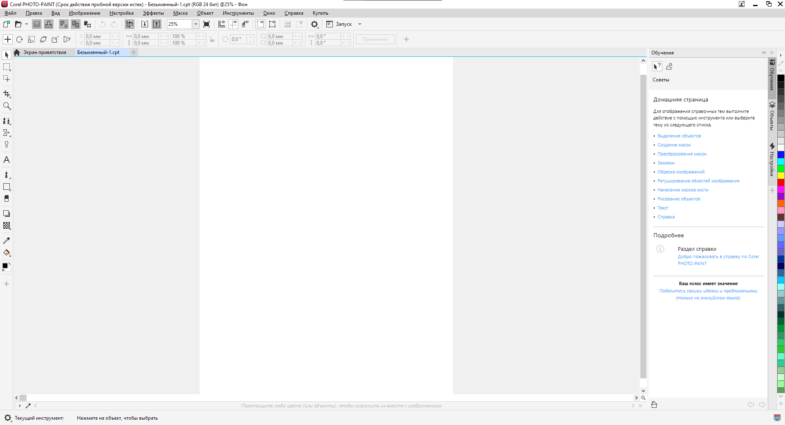

Графічний редактор Corel PHOTO-PAINT
Corel PHOTO-PAINT, як і MS Paint і Adobe Photoshop, належить до редакторів растрової графіки. Він практично ні в чому не поступається Photoshop, будучи його старшим (за кількістю версій) братом-близнюком та головним конкурентом. Програма входить до складу пакету програм CorelDRAW і застосовується для обробки фотографій, плакатів, підготовки елементів відеороликів та графіки для Web.
Corel PHOTO-PAINT дозволить зробити вашу "електронну" фотографію кращою, ніж вона була в "паперовому" варіанті. Ви можете розфарбувати чорно-білу фотографію, підкоригувати експозицію, видалити розриви або згини, створити фотоколаж. Його рідний формат СРТ підтримує об'єкти, альфа-канали та лінзи. Разом із програмою поставляється бібліотека з 25 000 професійних зображень та символів, 1000 шрифтів, 2500 фотографій високої роздільної здатності. Залежно від виду установки та номера версії програми, цей продукт займає близько 115 Мбайт пам'яті на жорсткому диску.
Системні вимоги
- Оперативна пам'ять: 2GB
- Відеокарта: Сумісна з OpenGL 1.2
- Процесор: Intel Core i3/5/7 or AMD Athlon 64
- Місця на диску: 1 GB
- Операційна система: Windows 7
Інтерфейс
Corel PHOTO-PAINT має всі переваги інтерфейсу CorelDRAW. Його можна, і потрібно налаштовувати роблячи свою роботу більш комфортною та продуктивною. До того ж, схожість інтерфейсів та логіки роботи – додатковий плюс для тих, хто працює у CorelDRAW.
Особливості
Програма Corel PHOTO-PAINT проста у використанні. Після знайомства з роботою MS Paint і Adobe Photoshop вам не важко освоїти її, тим більше що багато властивостей цієї програми практично ідентичні властивостям Adobe Pho-toshop. Зазначимо деякі особливості цього редактора.
Інструментів малювання тут навіть більше, ніж у Photoshop, причому серед них є така "родзинка", як Image Sprayer (Розпилювач картинок). Головна перевага цього редактора перед програмою Photoshop полягає у можливості створення анімованих зображень у форматі GIF і відеокліпів у форматах AVI, MOV, MPEG.
Інша перевага перед Photoshop - менша вимогливість до ресурсів ПК та нижча вартість при покупці його у вигляді окремого продукту. Corel PHOTO-PAINT підтримує шість колірних моделей: RGB, CMY, CMYK, LAB, YIQ та HSB на відміну від двох колірних моделей у MS Paint та чотирьох – Photoshop.
У Corel PHOTO-PAINT є можливість редагування зображення в режимі низької роздільної здатності.
Corel PHOTO-PAINT підтримує прозорий фон, спрощуючи інтеграцію зображення з іншими елементами web-сторінок.
Corel PHOTO-PAINT підтримує інтерактивний режим налаштування розмірів пензля.
Corel PHOTO-PAINT дозволяє створювати PDF-файл, ідентичний оригінальному. Функція публікації в PDF розширює можливості створення професійної друкованої продукції.
У програмі є фільтри (plug-ins). Крім власних програма може використовувати фільтри для Photoshop, тобто здійснюється повна підтримка модулів фільтрів стандарту Adobe, які можуть імпортуватися, експортуватися, підвантажуватися.
Для поглибленого вивчення Corel PHOTO-PAINT у програмі є вбудований навчальний посібник Corel Tutor.
Редактор розуміє та вміє експортувати практично всі існуючі растрові, векторні, текстові та анімаційні формати, серед них: BMP, DIB, GIF, JPG, JFIF, PCX, PPM, PGM, PBM, TGA, TIFF тощо, так що ви можете вільно обмінюватися файлами з іншими програмами. Зокрема PSD-файли.
Adobe Photoshop з усіма непошкодженими шарами відкриваються для редагування в Corel PHOTO-PAINT 9 і подальшого експорту назад у формат PSD.
Поряд з перерахованими "двовимірними" форматами Corel PHOTO-PAINT може імпортувати також тривимірні об'єкти у форматах WRM, 3DMF і B3D. Додаткові переваги даній програмі забезпечує її тісна інтеграція з іншими програмними продуктами корпорації Corel, що входять до інтегрованого пакету CorelDRAW.
Переваги та недоліки
Переваги
- Це векторна програма, що полегшує створення таких дизайнів, як відбитки, гравюри, а оскільки вона заснована на векторі, ви можете збільшити свій дизайн і не втратити його якості. Це тому, що цей пакет працює з окремими об'єктами.
- Існують версії іспанською мовою, тоді як інші компанії, які розробляють програмне забезпечення, не приділяють особливої уваги ринку Іспанії чи Латинської Америки.
- програмне забезпечення, яке підтримка багатосторінкового процесу, тобто підтримує рівновагу з обох сторін сторінки.
- Крім встановлення на ПК, його можна встановити на MAC, як і в таких операційних системах, як Windows і Linux.
- Він може обробляти файл Office (Microsoft).
- Перевага роботи з іншими конструкціями, розробленими в інших пакетах, таких як приклад "ілюстратора".
- Він підтримує передачу зображень з розширенням TIF, що не робиться іншими програмами.
- Він має інструменти для швидкого редагування, тобто без багато натискань.
- У вас є можливість знайти підтримку в Інтернеті, якщо є проблема під час розробки.
- Ви можете редагувати фотографії як супроводжується Photo-Paint, побітове програмне забезпечення для редагування зображень.
Недоліки
- Це займає багато місця на жорсткому диску.
- Програмне забезпечення, ціна якого дуже висока.
- споживає багато пам'яті при обробці зображення.
- Щоб обробляти графіку, необхідно мати комп’ютер із розширеною конфігурацією